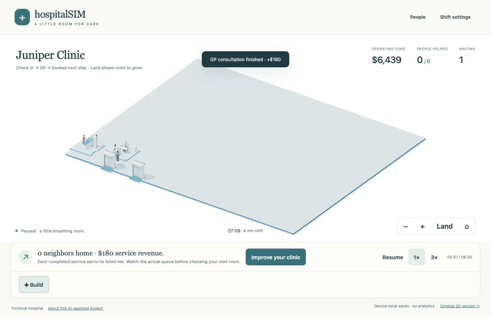
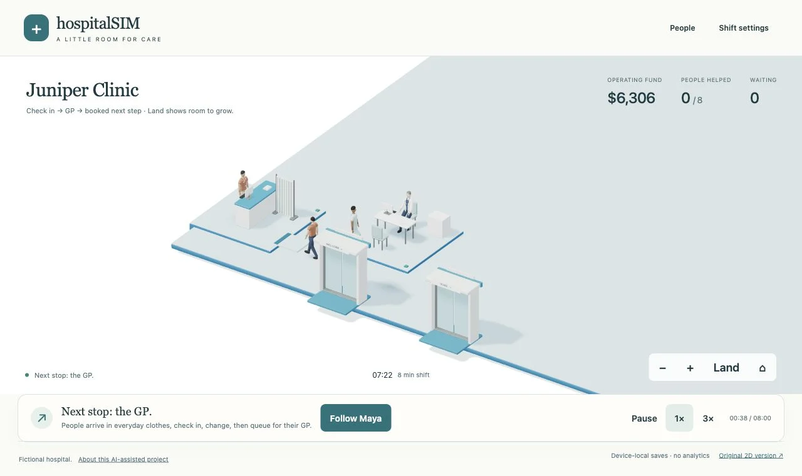
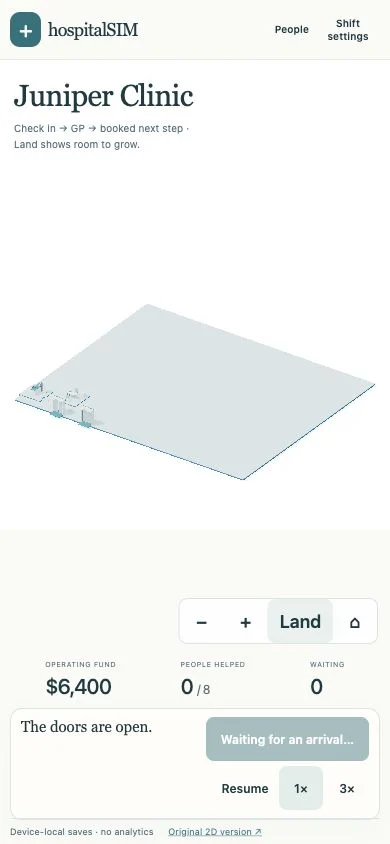
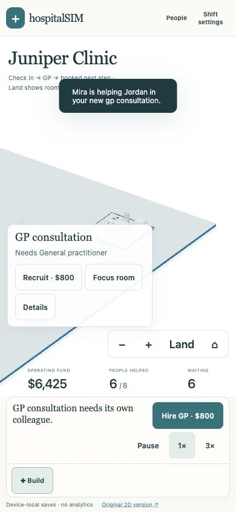
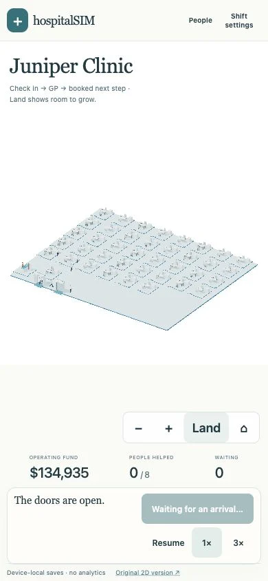

RC6 expands Juniper Clinic to 24 × 20 cells, from 9×8: 480 cells instead of 72, about 6.7× the area. Existing clinic saves expand in place. Costs, fees, arrival timing and booked pathways are unchanged.
Land shows the estate. Home returns to the starter clinic. Pan, zoom or use the room list to focus a district. You can place rooms on distant land using the map or the location list; people still walk the actual distance.




Tests ran on the Apple M2 desktop browser at 390×844, with the 30fps mobile profile. Camera buttons were at least 44×44px; page width stayed 390px. This is not a physical iPhone/Safari result. Full patient visits, billing, reload and a legacy save import were checked.

The model checks 3,921 flood/BFS comparisons, live migrations at eight visit times, exact save/load continuation, protected routes/doors and 3,487 green landing cells in the stress fixture. All 27 game test files pass. The limits of 64 rooms and 64 staff are safety caps, not a mobile performance guarantee.
The first static 40-room overview observed 484,738 rendered triangles and 555 draw calls. A fresh sample as colleagues entered/travelled observed 547,598 triangles and 569 draw calls; 1439 accepted frame intervals averaged 33.37ms, p95 34.30ms, on Apple M2 with the mobile30 profile. The sample begins in local view before switching to overview. It exceeds the provisional 250,000-triangle/150-call budgets. Large overviews need batching and equipment LOD work before dense hospitals can be called mobile-ready.
The two-room scene is much lighter (one narrow sample: 53,324 triangles, 57 draw calls). CPU placement scans and pickup measurements are in the model JSON, with hardware and scope. No phone benchmark or independent usability result is inferred.
The land is plain; the original humans, fabric, hands and task contact remain simplified. The supplied reference has softer shadows, richer materials and stronger elevation/composition. This update provides buildable space; it does not establish commercial-game quality, fun, learning effectiveness or production readiness.
No new Blender execution for this land update. The existing editable Blender sources, 107 GLBs and textures are unchanged. REPLISOME and unrelated portfolio content are preserved. Substantial AI assistance remains documented.
Full campus model/verification note · Measured model checks · Historical RC5 patient-loop film and reference comparison · Editable source